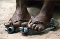
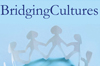
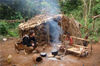
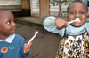
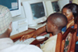
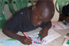
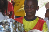
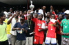
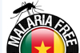
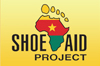

For over a decade, Hope Foundation has been actively involved in several major projects both in Cameroon and in Germany. Each one of its projects is undertaken with the intention of reaching its core mission: to alleviate poverty and educate people in order to engage and empower disadvantaged communities in Cameroon.
We are building a multi-purpose school in the city of Bertoua, located in the eastern region of Cameroon (Est). At the beginning of the project 2013 we worked together with 15 students of architecture of the Technische Universität Berlin. They designed the construction plan and supported us in the first and second building phase in Cameroon. ...read more
 Berlin, 16 July 2011 – Hope Foundation teams up once again with one of Berlin’s most popular cultural beach bars, Yaam, near Ostbahnhof, on Saturday, 16 July, to hold its annual fundraising event, Barefoot for Africa. ...read more
 Bridging Cultures is a ‘Global Cultures Education Program’ with the main aim of promoting intercultural relationships and raising awareness among students in Berlin about developmental issues faced by under-developed countries. ...read more
 The main aim of this project is to empower the Mbororos and the Baka Pygmies minorities in east Cameroon by making them aware of their rights and duties, and enabling them to take full advantage of their inherent capabilities. ...read more
 Hope Foundation is involved in water installation programs in some of the poorest parts of Cameroon. With the assistance of international volunteers, it builds, renovates and renews a number of water points around various provinces where there is a significant lack of a number of basic infrastructures. ...read more
Hope Foundation is involved in water installation programs in some of the poorest parts of Cameroon. With the assistance of international volunteers, it builds, renovates and renews a number of water points around various provinces where there is a significant lack of a number of basic infrastructures. ...read more
 Mouth hygiene and the importance of using a toothbrush properly is of utmost importance in all societies but in some local areas of Cameroon this concern is alarming. ...read more
 Hope Foundation’s Computer Sensitisation project collects donated computers from private and commercial donors and sends them to Cameroon where they are used to train adolescents, women and students in rural areas and schools. ...read more
 Hope Foundation has been supporting a number of schools, orphanages and social centres since its inception. Our grant making and scholarship initiative serves as a main tool in motivating and enhancing the skills and work of many people and institutions in local Cameroonian societies. ...read more
 In December each year, Hope Foundation supports children in orphanages and local areas by giving them gifts in the form of toys as well as school material, medication and clothing. A Christmas party, with singing, dancing, food and celebration accompanies the much-awaited gifts, bringing joy and a smile to each child’s face. ...read more
 HIV-AIDS remains an area of large concern in Cameroon and Africa in general and Hope Foundation is fighting hard in rural communities to curb the spread of this disease through a number of educational, training and sensitisation programs. ...read more
 Malaria Free Cameroon is an initiative launched by Hope Foundation to save the local population from contracting malaria. ...read more
 The Shoe Aid project is a donation program where shoes are collected in well developed countries, transported to Africa and then freely distributed to children and families in Cameroon and neighbouring countries. ...read more